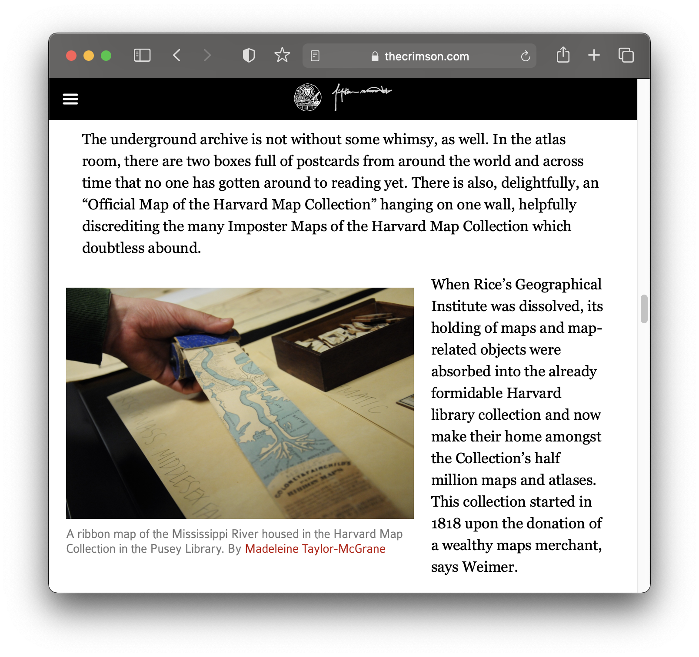
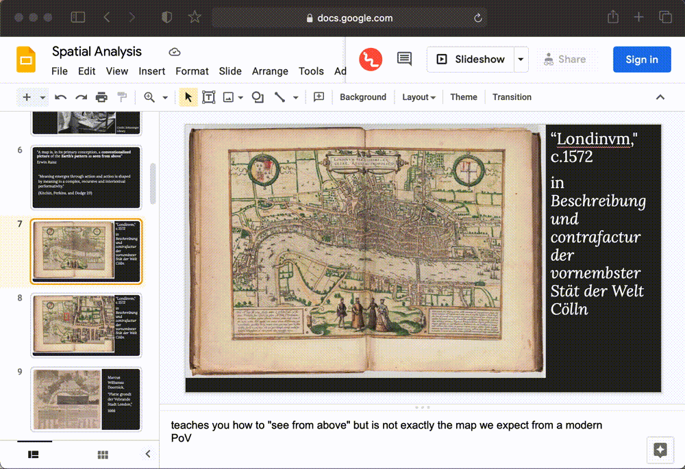
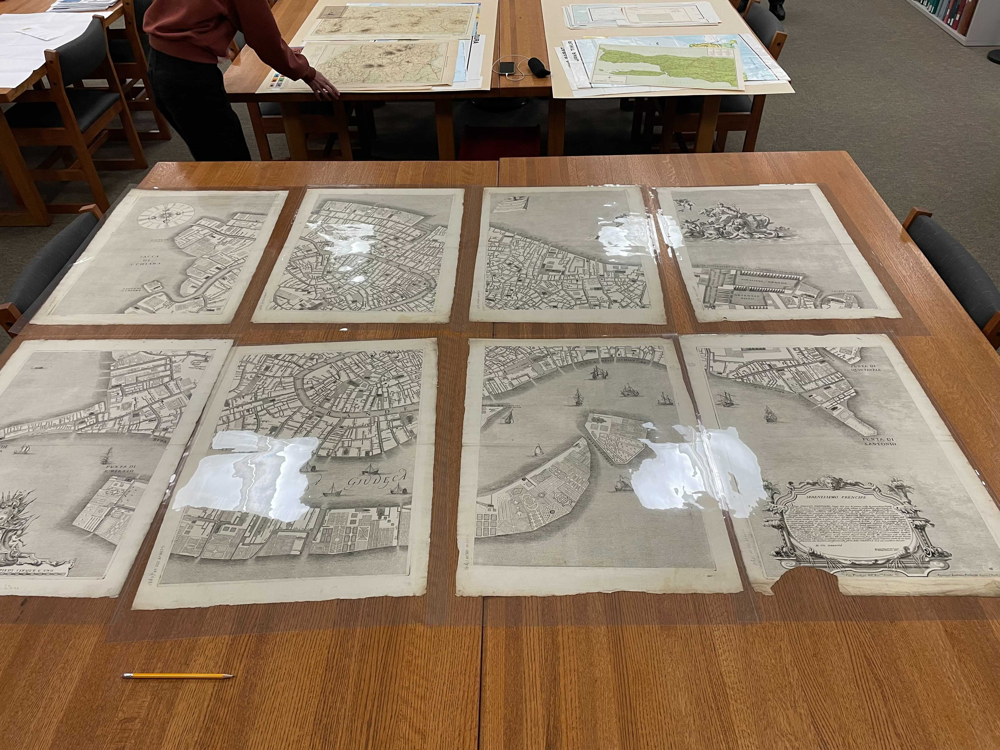
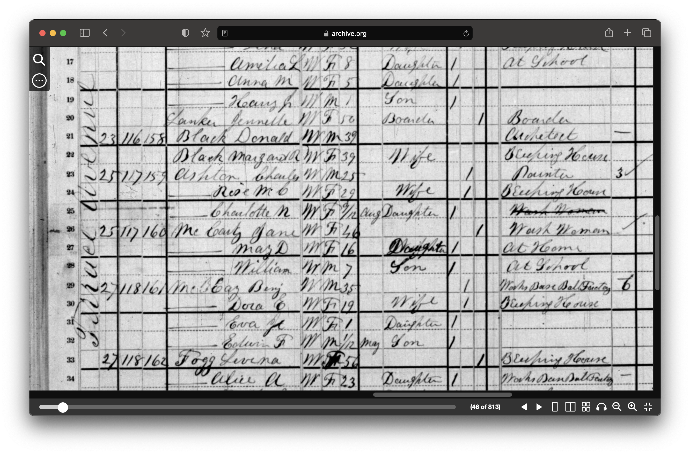
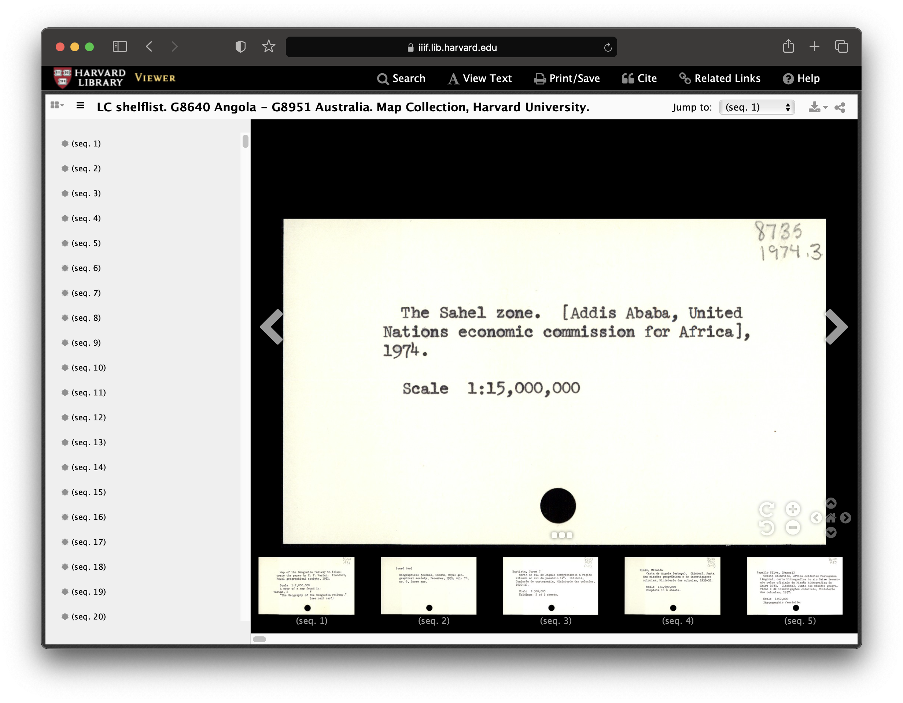
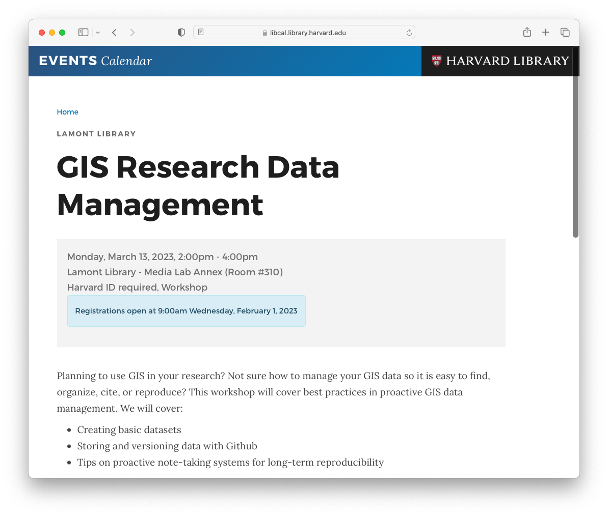
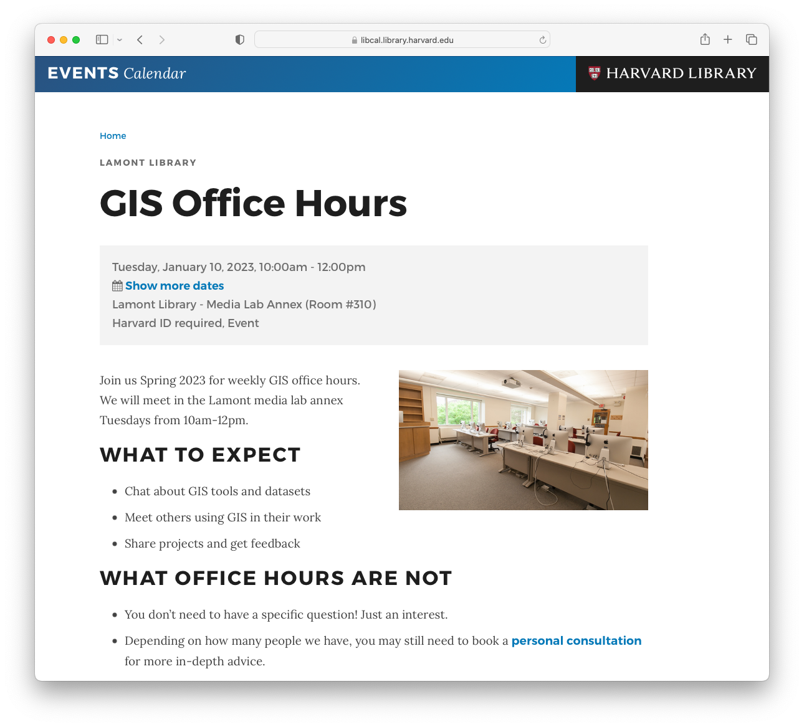
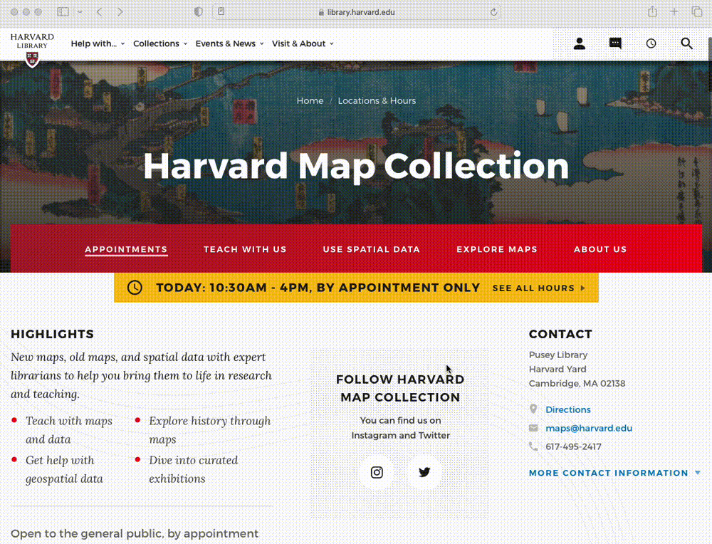

GIS @ Harvard Libraries

Classes
GSD: Spatial Analysis
 Fall 2021 presentation .

 Map created by
GSD students Aeshna Prasad, Michael Lidwin, Megan Mcglinchey, and Mehvish Jamal working with the Map Collection.
Map created by
GSD students Aeshna Prasad, Michael Lidwin, Megan Mcglinchey, and Mehvish Jamal working with the Map Collection.
Data management
 OldNYC: Mapping Historic Photographs at the NYPL
.
OldNYC: Mapping Historic Photographs at the NYPL
.
 1880 census from Archive.org .
 ArcGIS Map
comparing 1890 atlas to today.
ArcGIS Map
comparing 1890 atlas to today.
 Global volcanoes dataset
in the Harvard Geospatial Library (HGL).
Global volcanoes dataset
in the Harvard Geospatial Library (HGL).
Research


 Record from Harvard Map Collection card catalog .
Services and Resources
 The Harvard Map Collection maintains a series of tutorials, guides, and updates
about mapmaking.
The Harvard Map Collection maintains a series of tutorials, guides, and updates
about mapmaking.
 We offer workshops available via the library events calendar .
 Join us for GIS Office Hours .
 For in-depth one-on-one consultations make an appointment frome the Harvard Map Colletion Website .
maps@harvard.edu
For any questions, you can contact us at maps@harvard.edu .